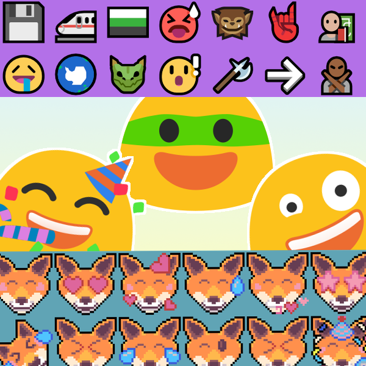
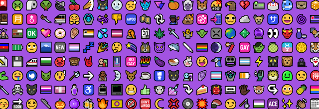
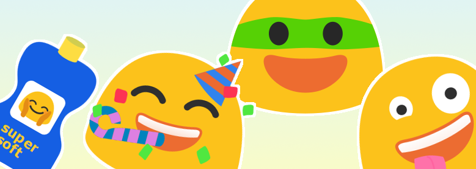
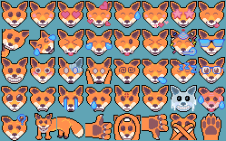
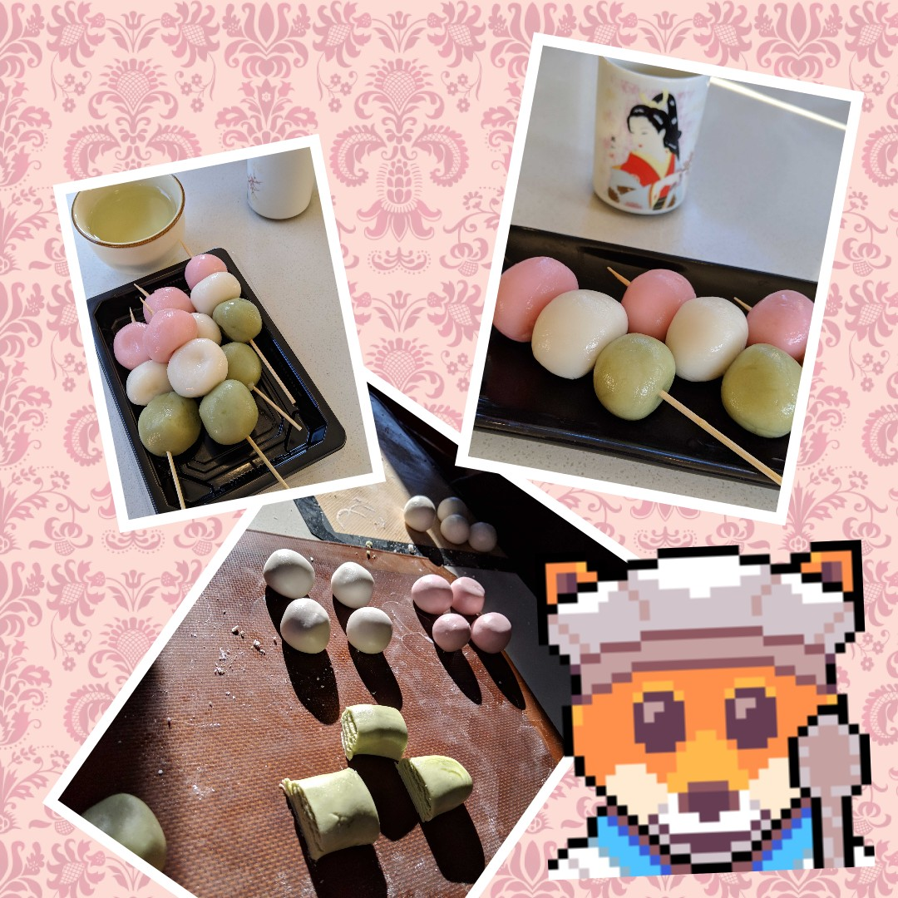

Tim Swast on
:
Tim Swast on
:
Three indie emoji sets

Emoji are practical art pieces. We share these little images multiple times a day. In this post, I share a few emoji sets that indie designers have published under open licences. They bring me joy where I am able to use them.
Mutant Standard

Mutant Standard is the epitome of an indie emoji set. Dzuk created a full set of emoji, with additions to the standard to make it more inclusive. It's specifically licensed under a non-commercial license to separate Mutant Standard from corporate interests.
| Website | mutant.tech |
| License | Creative Commons - Attribution Non Commercial Share Alike |
| Coverage | Full Unicode standard + extra emoji. Some exceptions for ethical reasons. |
| Source Code | github.com/mutantstandard/build |
Blobmoji

I was sad to see the beloved blobs go, but with the blobmoji project, you can have them back! Constantin, the designer, has even created blob versions of new emoji, keeping up with the latest Unicode standards.
This project makes me smile. I love that these cute blobs have been granted a new life by this indie project.
| Website | github.com/C1710/blobmoji/wiki |
| License | Apache 2.0 |
| Coverage | Full Unicode standard. |
| Source Code | github.com/C1710/blobmoji |
Bananamoji - Pixel Art Emoji

I’ve been making pixel art emoji sets for my friends and family since 2017, though I've increased my rate of production in 2019. I want to make gifts that my friends can use every day in conversation. In recent months, I’ve made it a personal goal to draw a different emoji each day, with a particular friend in mind for each set.
| Website | stickers.bananajuice.tech |
| License | Creative Commons - Attribution |
| Coverage | Incomplete. Several versions of most commonly-used smileys and people. |
| Source Code | github.com/bananajuicellc/bananamoji |
How do I use indie emoji?
It's pretty difficult to use indie emoji as your phone's emoji set. It's possible on Android, but I haven't found a way to do it without rooting my phone, so I haven't tried. Still, these emoji can be used in apps that support custom emoji, like Discord, Mastodon, and Slack.
I've found that the emoji PNG images work well as stickers in Pic Collage. Download an image, such as the foxy chef emoji, to your phone and add it to your collage as a "photo", Pic Collage respects the transparency layer, so the emoji looks like a sticker.

Honorable Mention - Twemoji
I give an honorable mention to Twemoji. It's not "indie", but Twitter makes its full set of emoji available under a Creative Commons license. It's a great resource for designers and developers.
| Website | twemoji.twitter.com |
| License | Creative Commons - Attribution |
| Coverage | Full Unicode standard. |
| Source Code | github.com/twitter/twemoji |
What is the future of indie emoji?
There are thousands of emoji now. That's an overwhelming number for any single designer to make. Personally, I find it inspiring. I love a project that I can slowly make progress on. I'm not in a rush to finish the whole set, and I'm enjoying the journey so far.
It's my hope that it will get easier to use a customized emoji set. There's lots of room in the emoji standard for expressing individual personality, even if it's just visible on your own device. In the meantime, enjoy these indie emoji in apps that allow custom emoji and as stickers for your photos.